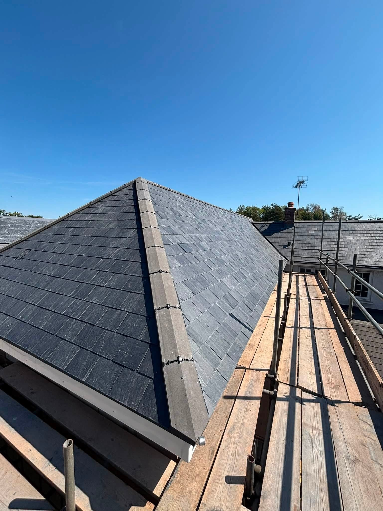
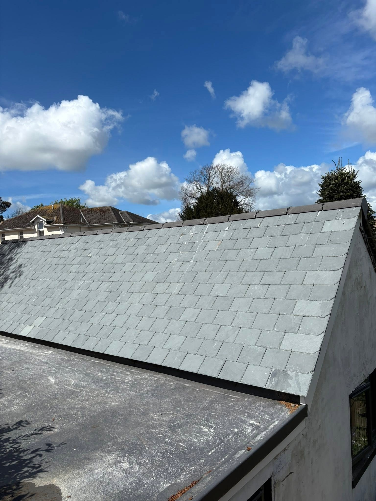
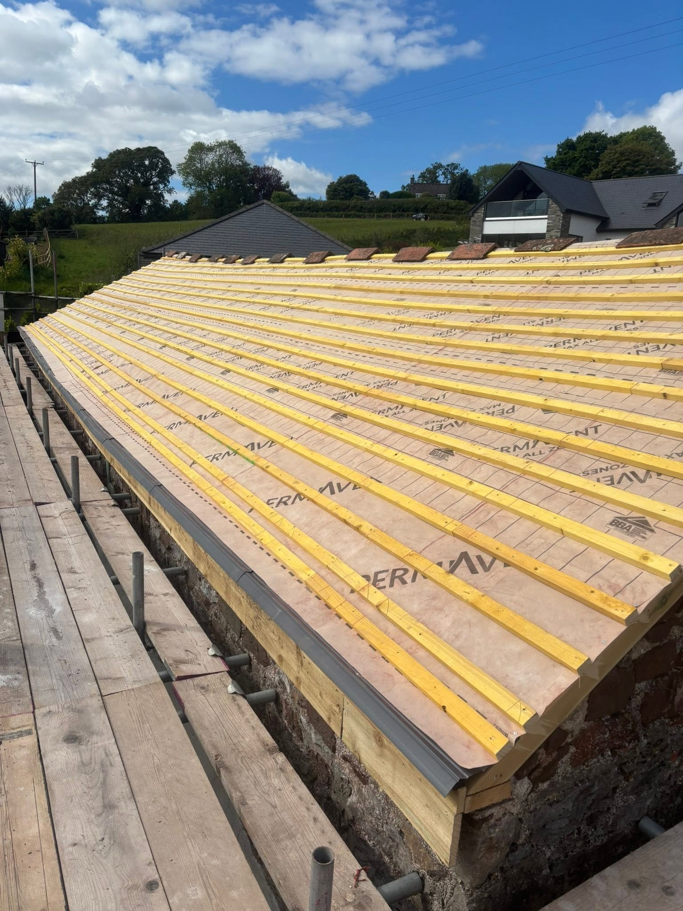
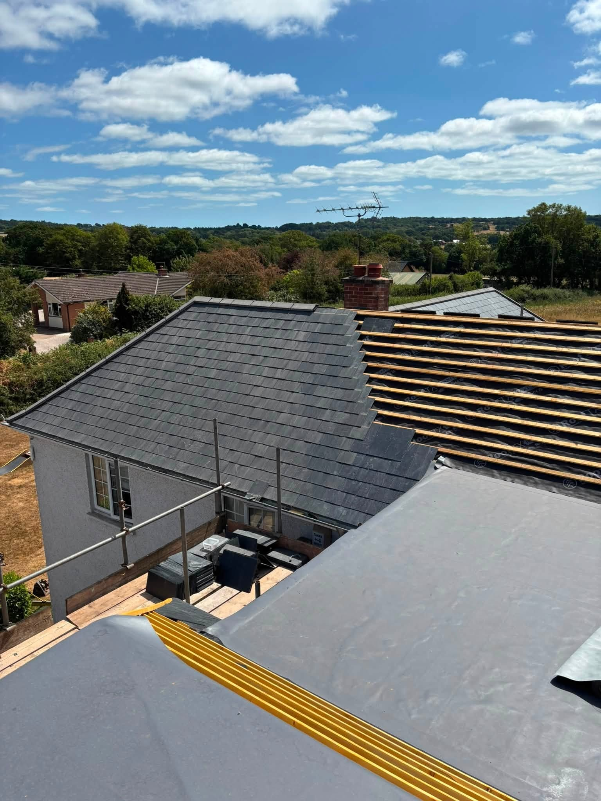
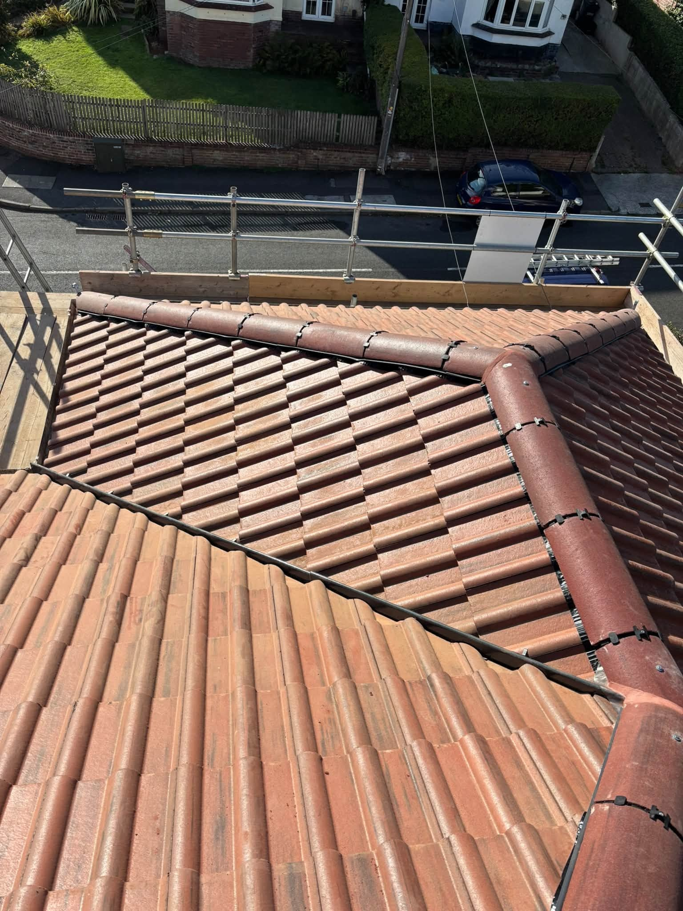
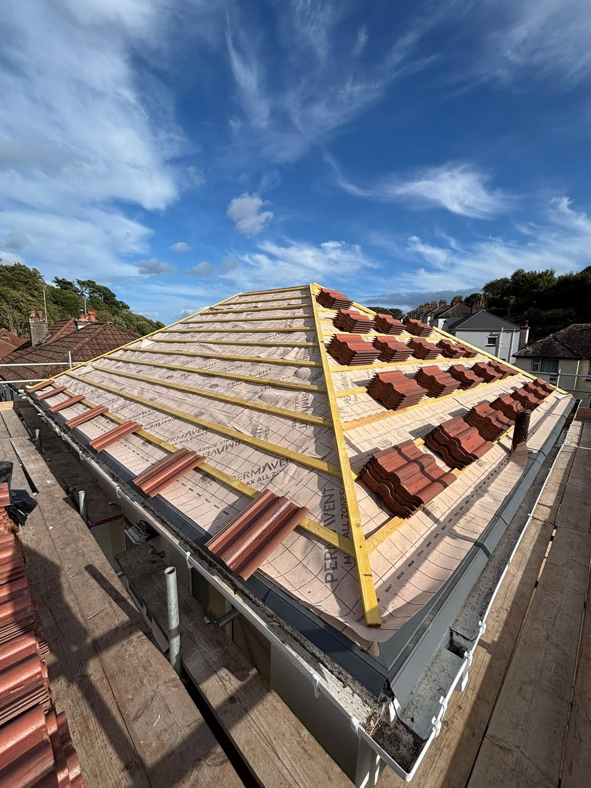
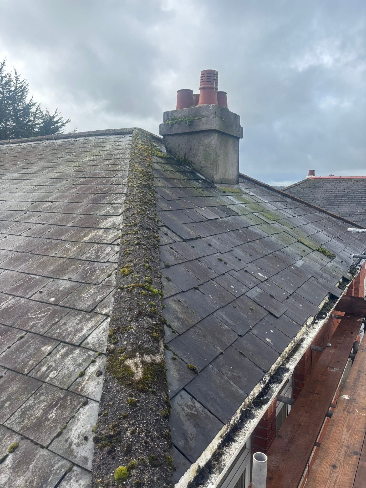

R VIRGIN ROOFING · Torquay & Paignton
Your roof, in experienced hands.
Slating, tiling, leadwork and EPDM flat roofing in Torquay and Paignton. Over 13 years of roofing experience, with direct Call and WhatsApp enquiries.
Roofer in Torquay & Paignton
From the first batten to the final ridge.
R Virgin Roofing is based in Torquay, with over 13 years of roofing experience and completed work in Paignton. Services include slating, tiling, leadwork, EPDM flat roofing, guttering, fascias and roofing maintenance. Explore recent work and get in touch about your property.
Roofing around your home
The portfolio shows slate and red tile finishes, work around chimneys, roof junctions and a flat roof beside a pitched roof. There are also preparation photos that show the membrane and battens before the final finish. Each project starts with the roof and property in front of you.
A direct conversation about the work
Call 07881 239360, email rvirg91@gmail.com or use the WhatsApp form below. Include your postcode, the work you have in mind and any photographs you can share safely. The form prepares your name, selected service, location and details in one message.
Discuss your roof →

Slating & tiling & EPDM flat roofing
From clean slate courses to finished rooflines.
The project photographs show the main roof surface and its edges, chimneys and junctions. Explore each service for more details and examples.
Discuss your project →

RECENT WORK
See the finished work.
A closer look at projects and work in progress.







BEFORE & AFTER
The same slate roof. Before and after.
The same chimney, roof area and adjoining property are shown before replacement and with the finished slate roof.
Discuss your roofing project →
Torquay & Paignton
Torquay based. Experienced in roofing.
R Virgin Roofing has over 13 years of roofing experience. The business is based in Torquay, with completed work in Paignton, and specialises in slating, tiling, leadwork, EPDM flat roofing, guttering, fascias and maintenance.
Roofing experience stated in the business profile.
A range of roof work, with real project photographs to explore.
Call, email or send your enquiry and photos on WhatsApp.
YOUR QUESTIONS
Before you enquire.
Where are you based?
R Virgin Roofing is based in Torquay. The portfolio also includes a completed roof in Paignton. Include your postcode so coverage and availability can be checked.
What services do you provide?
Slating, tiling, leadwork, EPDM flat roofing, guttering, fascias and roofing repairs and maintenance are listed by the business.
Can I send photographs with my enquiry?
Yes. Prepare the enquiry with the WhatsApp form, then attach your photos before sending. Wide views of the roof and safe photos of the concern are useful.
How much experience do you have?
The business profile states over 13 years of roofing experience.
REQUEST A QUOTE
Tell us what you have in mind.
Send the details of your project and its location. WhatsApp opens with your enquiry ready to send, where you can also attach photos.
R Virgin Roofing
Ready to discuss your project?
Torquay & Paignton